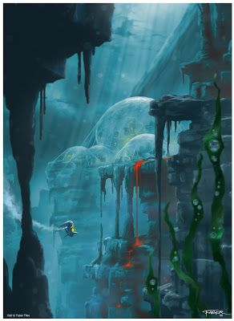

Mahri Nui was originally a coastal village on the island of Voya Nui. Due to its weak foundations it broke off the island and sank beneath the ocean in the event known as Great Cataclysm.
Unfortunately, Mahri Nui took its Matoran residents with it and they became trapped within the deep and dangerous ocean realm.
As Mahri Nui sank beneath the waves, it smashed into an airweed field, a species of aquatic plant which has the properties of naturally producing bubbles of air that can be harvested. This allowed the Matoran to harvest the bubbles and survive long enough to build shelter and resist further mutation by the water.
In media and literature
Literature
BIONICLE Legends -book series
Ignition -comic series
Serials
Into the Darkness
Dreams of Destruction
Destiny War
Dwellers in Darkness